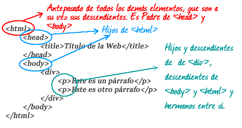
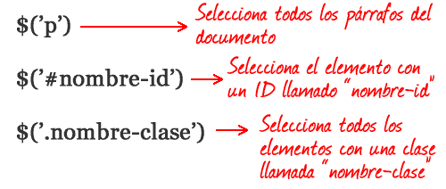
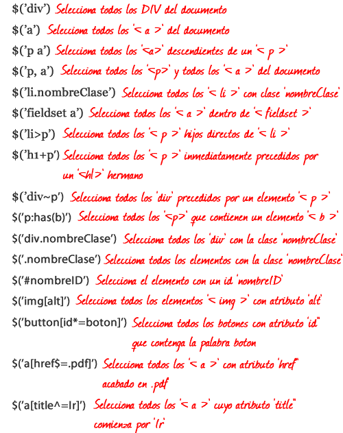
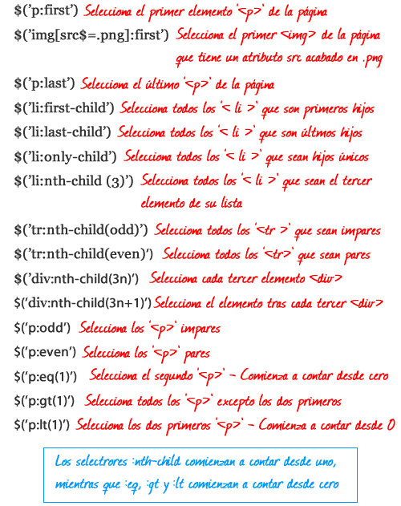
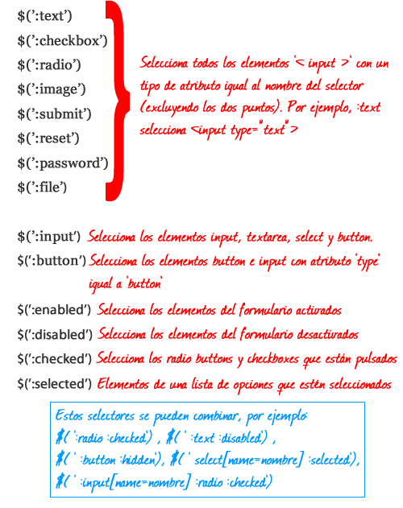

jQuery
"Escribe menos, haz más."
Created by Victor Velásquez / @vic977
Qué es jQuery?
JQuery es una librería JavaScript muy liviana, que nos ayuda a usar mas fácilmente JavaScript en nuestros sitios web.
JQuery encapsula las tareas mas comunes que normalmente requieren muchas lineas de código para llevarlas a cabo, y las entrega para que nosotros las llamemos con una sola linea de código.
Porqué usar JQuery?
Lightweight Footprint
Only 32kB minified and gzipped.
CSS3 Compliant
Supports CSS3 selectors to find elements as well as in style property manipulation
Cross-Browser
IE, Firefox, Safari, Opera, Chrome, and more
Browser Support
| Internet Explorer | Chrome | Firefox | Safari | Opera | |
|---|---|---|---|---|---|
| jQuery 1.x | 6+ | Current − 1 version | Current − 1 version | Current − 1 version | Current − 1 version |
| jQuery 2.x | 9+ |
Any problem with jQuery in the above browsers should be considered and reported as a bug in jQuery.
Current - 1 version denotes that we support the current stable version of the browser and the version that preceded it. For example, if the current version of a browser is 24.x, we support the 24.x and 23.x versions.
Para qué sirve jquery?
- Navegación y Manipulación del DOM
- Manipulación de CSS (estilos)
- Manipulación de eventos
- Ajax
- Efectos y animaciones
- y muchas funciones utilitarias...
Navegación y Manipulación del DOM
Selectores
Por un selector entendemos en jQuery lo mismo que en CSS: una forma de permitirnos elegir un elemento (o varios) entre todos los que tenemos en nuestro documento HTML. ¿Para qué? Para luego poder aplicar sobre los elementos seleccionados diversas funciones.
Que es el DOM?
DOM (Document Object Model, "Modelo de Objetos del Documento" o "Modelo en objetos para la Representación de Documentos") Proporciona un conjunto estándar de objetos para representar documentos HTML y XML.
Que es el DOM?

$('selector')

Cómo sé si mi selector contiene elementos?
//No funciona
if($("div.header")) {
//Hago algo
}
JQuery siempre retorna un objeto cuando se usa un Selector. Y como ya vimos un objeto evaluado en un if es TRUE.
Debemos usar la propiedad length
if($("div.header").length){
//Hago algo
}
Selectores CSS

Selectores propios

Selectores de Formulario

Más Selectores
Manipulación de eventos

Eventos
- click
- Change
- blur
- focus
- hover
- Más en http://api.jquery.com/category/events/
Método .on()
jQuery.each( ("blur focus focusin focusout load resize scroll unload click dblclick " +
"mousedown mouseup mousemove mouseover mouseout mouseenter mouseleave " +
"change select submit keydown keypress keyup error contextmenu").split(" "), function( i, name ) {
// Handle event binding
jQuery.fn[ name ] = function( data, fn ) {
if ( fn == null ) {
fn = data;
data = null;
}
return arguments.length -> 0 ?
this.on( name, null, data, fn ) :
this.trigger( name );
};
Manipulación de CSS (estilos)

Métodos
Ajax

Métodos
Efectos y animaciones

Que es el DOM?
DOM (Document Object Model, "Modelo de Objetos del Documento" o "Modelo en objetos para la Representación de Documentos") Proporciona un conjunto estándar de objetos para representar documentos HTML y XML.
y muchas funciones utilitarias...
TODO Herencia
TODO clonacion
TODO No Confict

Que es el DOM?
DOM (Document Object Model, "Modelo de Objetos del Documento" o "Modelo en objetos para la Representación de Documentos") Proporciona un conjunto estándar de objetos para representar documentos HTML y XML.
No Conflict
Try it out! You can swipe through the slides and pinch your way to the overview.